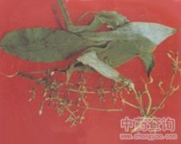

鸡矢藤

拼音
Jī Shǐ Ténɡ
别名
鸡屎藤、牛皮冻、解暑藤、狗屁藤、臭藤、皆治藤、清风藤[福建]
来源
为茜草科鸡矢藤属植物鸡矢藤Paederia scandens （Lour.） Merr.，以根或全草入药。夏季采全草，秋冬采根，洗净晒干。
生境分布
生于山地路旁或岩石缝隙、田埂沟边草丛中。产于云南、贵州、四川、广西、广东、福建、江西、湖南、湖北、安徽、江苏、浙江。
药材特点
多年生草质藤本，全株均被灰色柔毛，揉碎后有恶臭。叶对生，有长柄，卵形或狭卵形，长5～11cm，宽3～7cm，先端稍渐尖，基部圆形或心形，全缘，嫩时上面散生粗糙毛；托叶三角形，早落。花多数集成聚伞状圆锥花序；萼5齿裂；花冠筒钟形，外面灰白色，具细茸毛，内面紫色，5裂；雄蕊5，着生于花冠筒内；子房2室，每室1胚珠。果球形，淡黄色。花期8月，果期10月。
性状
无性状数据
性味
甘、微苦，平。
功能主治
祛风利湿，消食化积，止咳，止痛。用于风湿筋骨痛，跌打损伤，外伤性疼痛，肝胆、胃肠绞痛，黄疸型肝炎，肠炎，痢疾，消化不良，小儿疳积，肺结核咯血，支气管炎，放射反应引起的白血球减少症，农药中毒；外用治皮炎，湿疹，疮疡肿毒。
用法用量
0.5～1两，外用适量，捣烂敷患处。
化学成分
含猪殃殃甙（asperuloside）、鸡矢藤甙（paederoside）鸡矢藤次甙（scanderoside）及鸡矢藤甙酸（paederosidic acid）、去乙酰猪殃殃甙（deacetylasperuloside），后两者系提取过程中的产物。还含有γ-谷甾醇、熊果甙（arbutin）及挥发油。
药理作用
1：无药理作用
摘录
《全国中草药汇编》